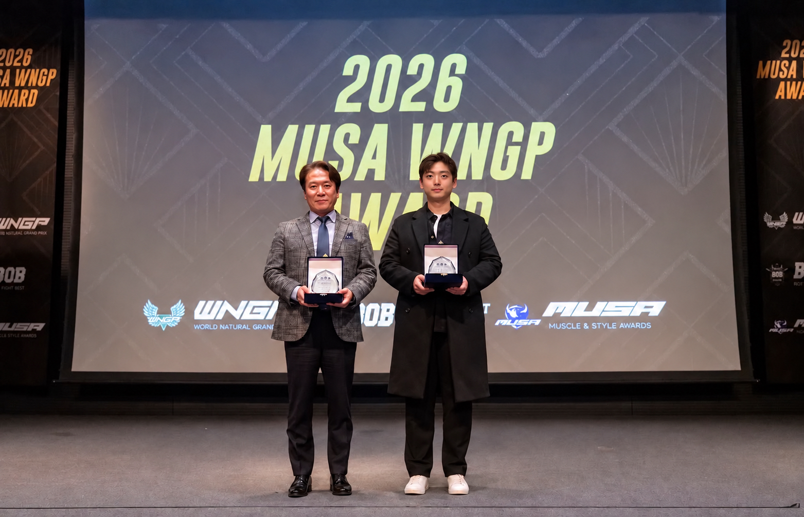
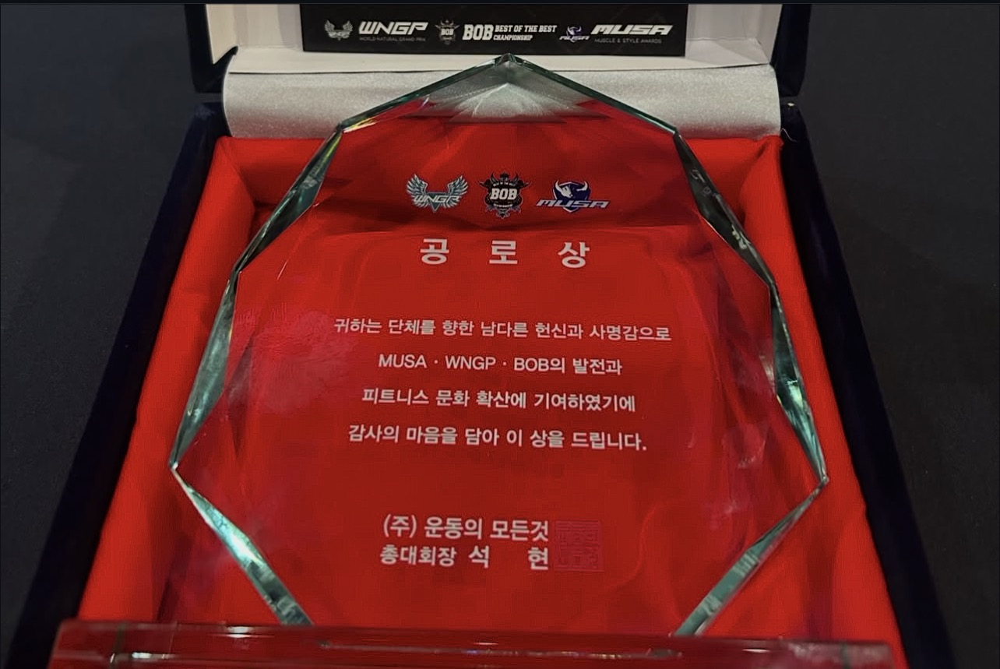
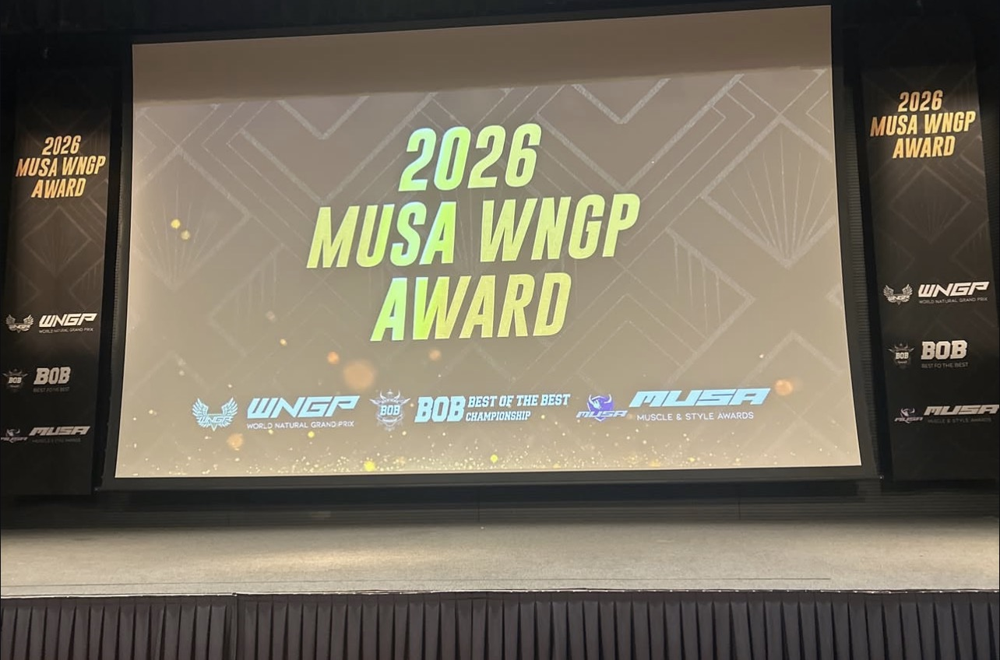
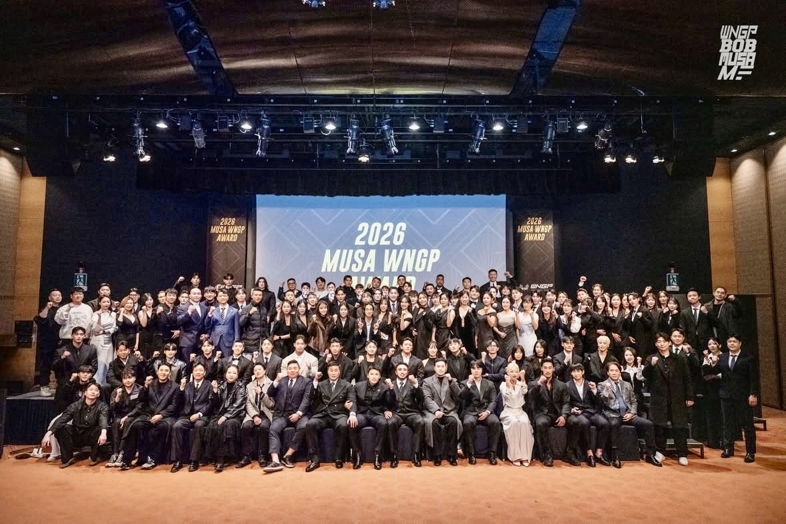

대학교 교수 대외 활동 ·
2026 WNGP · MUSA · BOB AWARDS
공로상 수상
대학교 교수로서 함께한 피트니스 현장,
선수들의 도전과 성장을 응원합니다.

교수로서 함께한 현장
교육과 운동 현장을 잇는 활동
분당튼튼운동센터 손진석 대표원장은 2026년 1월 25일, 대학교 교수로서 학교를 대표해 2026 WNGP · MUSA · BOB AWARDS에 참석하고 공로상을 수상했습니다.
이번 수상은 교육과 운동 현장에서 선수들의 성장과 피트니스 문화의 발전을 함께 고민하는 뜻깊은 계기가 되었습니다.
- 일자
- 행사
- 2026 WNGP · MUSA · BOB AWARDS
- 참석
- 손진석 대표원장 · 대학교 교수 자격
- 수상
- 공로상
현장 기록
공로패와 시상식의 순간들
공로패에는 MUSA · WNGP · BOB의 발전과 피트니스 문화 확산에 대한 기여를 기리는 감사의 뜻이 담겨 있습니다. 행사 무대와 참석자들이 함께한 순간을 사진으로 전합니다.



선수들의 다음 도전을 응원하며
꾸준한 노력과 성장을 함께 응원합니다
무대 위에서 자신의 한계를 뛰어넘기 위해 노력하는 선수들의 열정과, 보이지 않는 곳에서 이어 온 꾸준한 노력을 응원합니다.
앞으로도 교육과 운동 현장에서 선수들의 성장과 대한민국 피트니스 문화의 발전에 보탬이 될 수 있도록 노력하겠습니다.
외부 활동 목록 보기